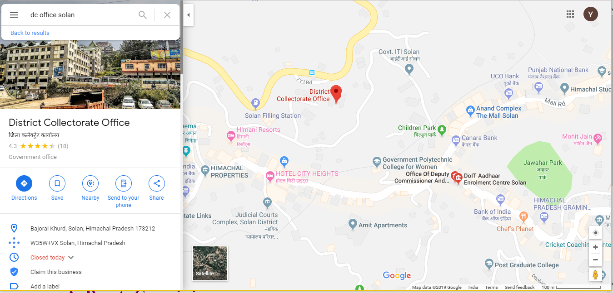

The general administration of the district is vested with the Deputy Commissioner, who for administrative purposes, is under the Divisional Commissioner, Hisar. He is at once the Deputy Commissioner, the District Magistrate and the Collector. As Deputy Commissioner, he is the executive head of the district with multifarious responsibilities relating to development, panchayats, local bodies, civil administration, etc. As District Magistrate, he is responsible for law and order and heads the police and prosecuting agency. As Collector, he is the chief Officer of the revenue administration and is responsible for collection of land revenue, and is also the highest revenue judicial authority in the district. He acts as the district Elections Officer and the Registrar for registration work. He exercises over-all supervision on other government agencies in his district. He is, in short, the head of the district administration, a coordinating officer among various departments and a connecting link between the public and the government so far as he executes the policies, administers the rules and regulations framed by the government from time to time .
The main functions of the Deputy Commissioner may be broadly categorised as :co-ordination of development and public welfare activities as Deputy Commissioner, revenue officer/Court of the district as District Collector, and law and order functions as District Magistrate. Thus, he acts as Deputy Commissioner, District Collector and District Magistrate on different occasions. His role in each of these capacities is described, in brief, as under:
As Deputy CommissionerHe is the executive of the district with numerous responsibilities in the sphere of civil administration, development, panchayats, local bodies, etc. Due to immense importance of his office, the Deputy Commissioner is considered to be the measuring rod of efficiency in administration. The Deputy Commissioner has an Office Superintendent under him, to supervise the work of the clerical staff. He guides functioning of different branches of his office. Each branch is headed by an Assistant and is functionally known after him. For example, the branch looked after by Establishment Assistant (EA) is known as the EA Branch, the one under Miscellaneous Assistant is known as the MA Branch, etc. etc. An Assistant has to perform two types of functions-supervisory and dispositive i.e. he has to supervise the work of the officials working under him, and also to dispose of many cases either at his level or by putting them up to his senior officers. An Assistant has one or more Clerks under him. The number of branches in the office of the Deputy Commissioner differs from district to district depending upon the requirements in each case, but more important branches existing in almost all the districts are, Establishment Branch, Nazarat Branch, Sadr Kanungo Branch, Development Branch, Miscellaneous Branch, Licensing Branch, Complaints and Enquiries Branch, Local Funds Branch, District Revenue Accounts Branch, Flood Relief Branch, Revenue Records Branch, Records and Issue Branch, Sadr Copying Agency, Registration Branch, Peshi Branch, etc
LOCATION
